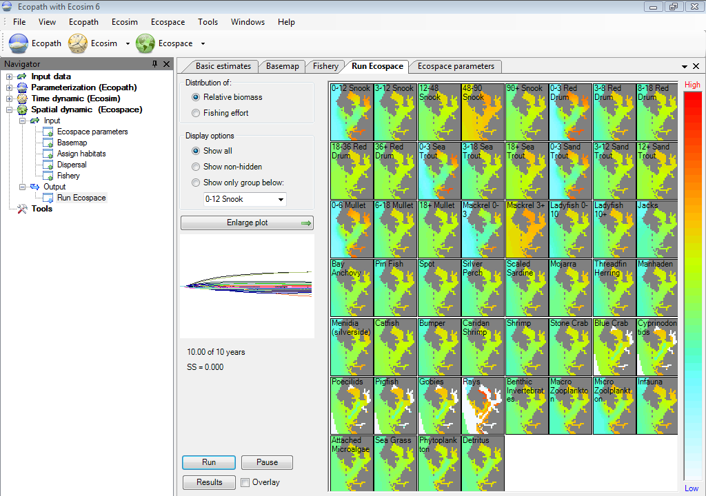

Ecospace runs thus imply the display of a succession of maps, one per iteration and group. Usually, the features of these maps will be gradually converging toward some stable equilibrium distribution. Alternatively these maps may regularly ‘flip’ between two states, suggesting some sort of dynamic equilibrium.
Which of these alternative occurs can be seen more clearly from the time plot (the small panel to the mid left of the Ecospace run window), which traces the progress of the run.
Show relative biomasses on the plots.
In the simple case that all exploited group have the same economic value (default = 1 monetary unit per tonne), and that all cells require the same sailing cost (default), fishing effort will be assigned to the (water) cells of the base map in proportion to their fishable biomass.
Thus, for example, fishing effort will tend to concentrate at the edges of protected areas – one reason, incidentally, why these edges should be as short as possible.
Show plots for all groups
Show plots for groups which are not-hidden on the Show/hide dialogue box.
Show plot for only the group that is selected in the drop-down list box below. You can change which group to display by selecting another group.
Plot showing biomass over time relative to biomass in Ecopath base run for each group. The scale is logarithmic spanning from 0.1 over 1 (same biomass as in Ecopath) to 10.
The time plot panel shows the (log) biomass of each group over time, from the start of the simulation, to its end. Usually, this will consist of a phase of rapid change, followed by a convergence of all groups toward their equilibrium states (flat lines). In other case, the lines representing the biomasses will oscillate more or less regularly (the preys usually displaying troughs when their predators show peaks, and vice versa), which will diagnose the dynamic equilibrium mentioned above.
Finally, one or several of the lines representing the biomass of various groups may decrease or increase continuously, indicating that this (or these) group(s) cannot be accommodated in the system. Thus, a group may decrease because it cannot find sufficient food in its assigned habitats, or encounters too many predators when feeding, non-withstanding it being mass-balanced in the underlying Ecopath file.
Alternatively, a group may increase due its ability to outgrow predatory control in its assigned habitats, or in another habitat, a feature sometimes due to an excessively high value of P/B, or to a diet composition that is too broad.
Enlarge the time plot and show it in the main window. You can use the mouse pointer to see the group names linked to the lines.
Start the run. Will change to ‘Stop’ once pressed, and to ‘Run’ again at the end of the run
Pause the run, e.g., to set up a protected area on the basemap.
Will display a summary of the results for the Start and End times set on the Ecospace parameters form. Results are averaged in the start and end year, i.e., when Ecospace reaches the Start time it will average results over the next number of timesteps (set in Summary timesteps on the Ecospace parameters form). Similarly, when it reaches the End time it will average over the next same number of timesteps.
Check to overlay the time plots on the time plot. Use this to check for initialization errors, i.e. this feature is mainly used to ensure that successive runs give the same results.

Figure 11.1 The Run Ecospace form.